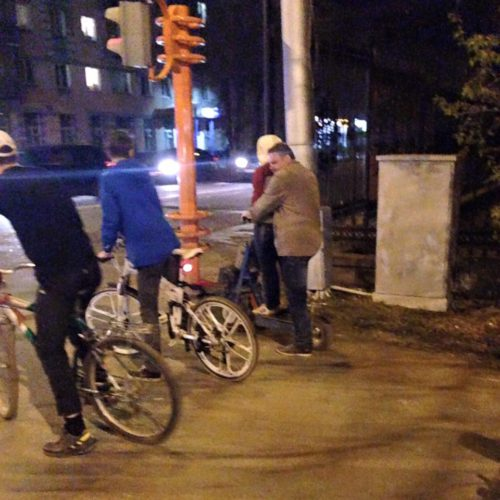

На вчерашний салют ездили все семьёй, конечно, на велосипедах. Учитывая, что Ленина был перекрыт аж от Терешковой, это был разумнейший выбор. На салюты давно не ездил, может давно так перекрывают, но машин даже на время салюта в пробках осталось стоять очень много.
Велосипедистов тоже было очень много. Внимание привлекла пара, которая ехала вдоль проспекта на странном транспортном средстве. На обратном пути мы стояли на одном светофоре. Оказалось — самодельный электросамокат.
